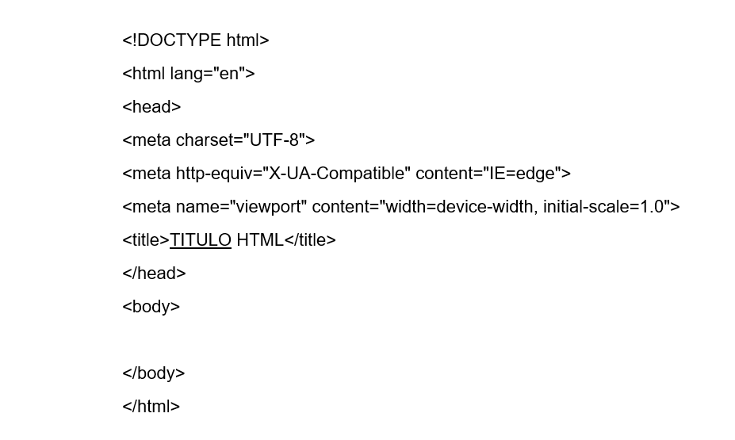
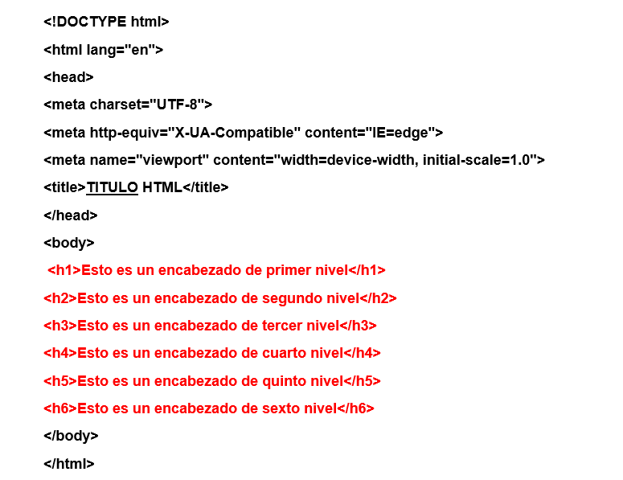
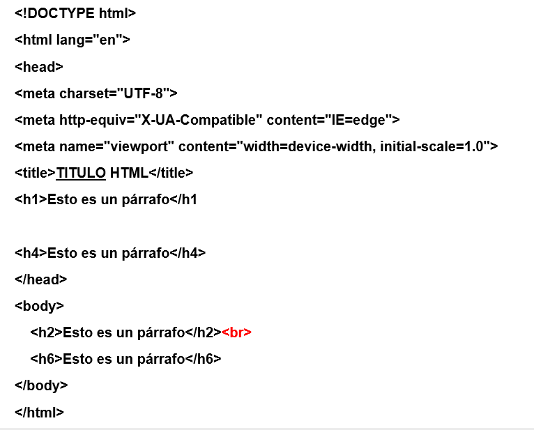

La gente que tiene al menos algo de idea sobre HTML 4 o cualquier versión anterior sobre probablemente en qué consiste y la importancia que tiene en la red. Desde el momento en que empiezas a navegar por internet, te encuentras con un montón de imágenes, tablas, gráficos, texto, audio y video. Cada página web parece única, pero todas tienen al menos una cosa en común: el lenguaje con el que están creadas, que hace que cada cosa se vea como lo hace, es HTML.
Deberás usar HTML para crear una página, sin importar el tipo de contenido que quieras tener en ella. Es como la fuerza que hace que todo se quede en el lugar que debe y que la página no parezca algo caótico. Si lo campáramos con una casa, HTML serian los cimientos, y el resto serían los ladrillos. Por eso, es muy importante dominar HTML, antes que pasar a trabajar con otros lenguajes de programación más complejos como CSS o JavaScript.
También es importante señalar que las paginas de HTML 5 son simples archivos de texto. El texto es la manera más corriente de introducir datos en un ordenador o un navegador. Cualquier cosa que crees utilizando HTML 5 (o cualquier versión anterior) podrá ser visto en un ordenador independientemente del sistema operativo que utilice (Windows, Mac, Linux, etc.).
Html contiene instrucciones especiales que hacen que el texto pueda enlazar con otro contenido de internet. Estos marcadores se suelen llamar “hipervínculos” (“hyperlinks”, en inglés) y son muy importantes en la composición de la red: si no fuera por ellos, esta no podría existir. Los navegadores suelen mostrar los hipervínculos en texto azul y subrayado. Si un hipervínculo es pulsado, te llevará a otra pagina en internet o a cualquier otra cosa con la que enlace.
todos y cada uno de los documentos html5 tienen una combinación exclusiva de elementos y contenido qué hacen que la página sea como es. La estructura correcta de un documento html5 es la siguiente:
El conjunto de estos elementos constituye un documento completo de html5. Dentro de estos hay otros elementos subordinados Qué son necesarios, y otras que son opcionales. Sin embargo estos tres principales están presentes en todas las páginas web.
El siguiente ejemplo incluye todos los elementos básicos necesarios en un documento HTML5.

Debes darte cuenta de que el elemento cabecera también contiene una etiqueta Meta.
Estos elementos se utilizan para especificar metadatos, qué son (por ejemplo) el autor de la página, la descripción del sitio, palabras clave, fecha de la última modificación, etc.
Estos son dos de los elementos más importantes y básicos en HTML5.
Se denotan con la etiqueta <h></h> y hay hasta 6 niveles en HTML5, desde h1a h6 dónde h1 es el de nivel más importante y h6 el que menos. El objetivo principal de los encabezados es el de dividir el documento en secciones. Así, se obtiene una estructura más organizada el separar el texto a lo largo de la página, además sirve para tener una idea visual de la agrupación del contenido. En el ejemplo se puede ver cómo usar los encabezados en HTML5:

Cualquiera que conozca algo de HTML4 u otra versión anterior ya estará familiarizado con la etiqueta párrafo. Los párrafos son bloques de texto qué más aparecen en los documentos web. Para agrupar el texto en párrafos, se utilizan las etiquetas <p></p>, ya que los navegadores no reconocen los "intros" (saltos de línea) qué se utilizan en los editores de texto.
Crear párrafos en HTML5 es muy sencillo. Basta con escribir una etiqueta de apertura <p> dentro del cuerpo, seguida del texto que quieras que contenga, y Añadir una etiqueta de cierre al final echa un vistazo al ejemplo:
Gracias a la etiqueta <p>, podemos tener dos párrafos diferentes en una página web HTML5. De la misma manera, puedes Añadir tantas como necesites o quieras en tu página. Solamente recuerda que debe cerrar cada párrafo con la etiqueta </P> si no lo haces, la página no podría cargar de manera correcta el contenido.
HTML5 no tiene en cuenta los saltos de línea a no ser que se le indiquemos con ciertos elementos de formato. El más utilizado es el elemento de salto de línea, que se representa con la etiqueta <br>. En el ejemplo puedes ver como, si no utilizamos este elemento, los saltos de línea no se muestran en el navegador. Los saltos de línea con (intro) el navegador los ignora. Recuerda que la etiqueta <br> se cierra sola, es decir, no hace falta encerrar el texto entre dos etiquetas; con ponerle al inicio o en el sitio deseado vale
Las listas se utilizan para agrupar información parecida o relacionada en una web. Permiten a Los visitantes tener acceso a grupos de información de manera rápida y sencilla. Hay cuatro tipos de listas: Numeradas, si numerar (con viñetas), listas de definiciones listas anidadas (listas dentro de otras).
Contiene los elementos listados, presididos y una viñeta (símbolo). Para crearla, se necesitan tres elementos, siguiente orden.